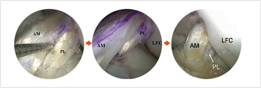
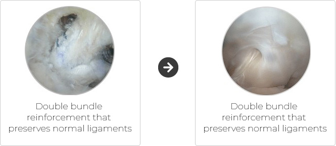
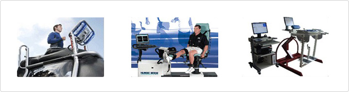
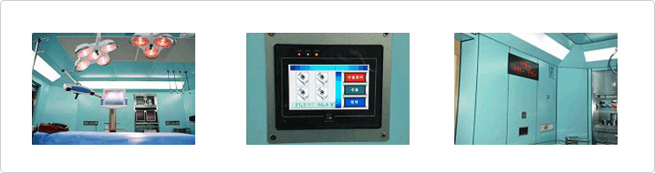

Reconstructive surgery for anterior and posterior cruciate ligament damage
Double bundle anterior cruciate ligament reconstruction
- Reconstruction is achieved by making two tunnelsin the femoral region and passing two tendons through them.
- Sole bundle reconstruction, in which only the most important tendon is reconstructed, is a widely used technique. However, weconduct double
bundle reconstruction which is more popular abroad.

Double bundle posterior cruciate ligament reinforcement
- doublebundle posterior cruciate ligament reinforcement is performed using joint endoscopy
- This reinforcement method is appropriate for patients undergoing surgical procedures that preserve normal tissues since the posterior has supplies
ligament tissues, regenerative tissues and functional knee nervous tissues with plenty of blood unlike the case of the anterior ligament. However,
it requires high-level of surgical technique.Nevertheless, it is commonly used to perform reconstruction after removing normal tissues.

One-Stop Rehab System from hospitalization to discharge
- We are running a rehabilitation program that involves therapistsin the program. Our sports rehab system enables patients to return to their normal
daily activities as fast as possible.

All operating rooms are hygienically clean
- Operation performancecan be negatively impacted because of secondary infection. We protect our operating rooms from invasion by infectious
viruses by keeping the rooms sterile and clean.
